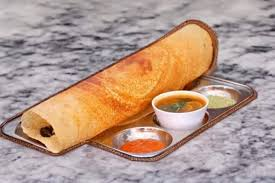

About me
Hi..It's Varshini
Favourites of Me
1.FOOD
2.TRAVEL
3.DESSERT
FAVORITE FOOD
|
 |
 |
Food is not just fuel for the body, but a catalyst for emotions, evoking memories,
comfort, and joy with every bite.Food is my love, and every delicious
bite is a taste of happiness and Food is a universal language that brings people together.
Every dish tells a story of love, tradition, and culture.
TRAVEL DESTINATION
|
|
|
"Traveling is my passion, and exploring new destinations, immersing myself in different cultures,
and creating unforgettable memories is what truly makes life exciting for me."
FAVORITE DESSERT
 |
 |
|
Dessert is a sweet course typically served at the end of a meal. It often includes items like cake,
cookies, ice cream, or fruit, providing a sweet and enjoyable conclusion to the dining experience.